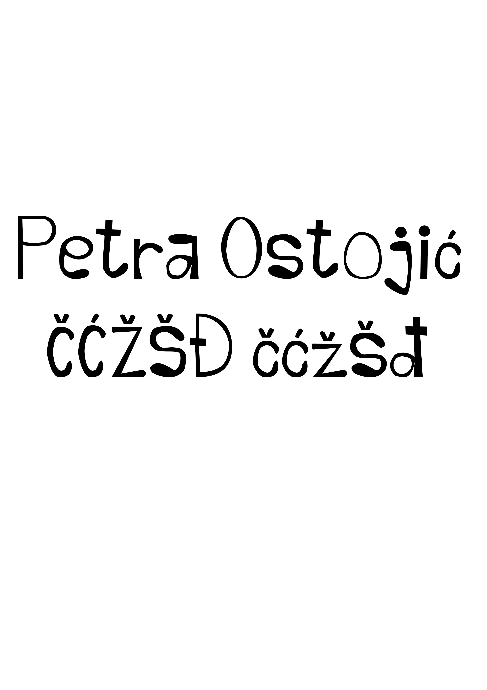
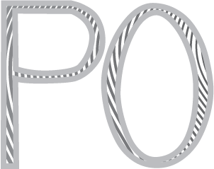
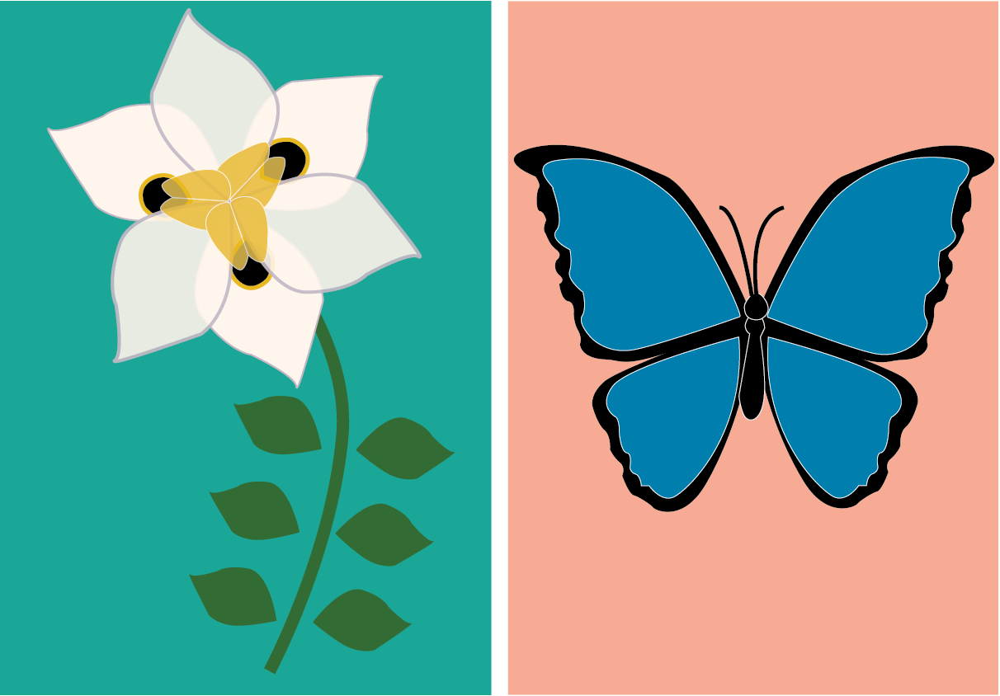
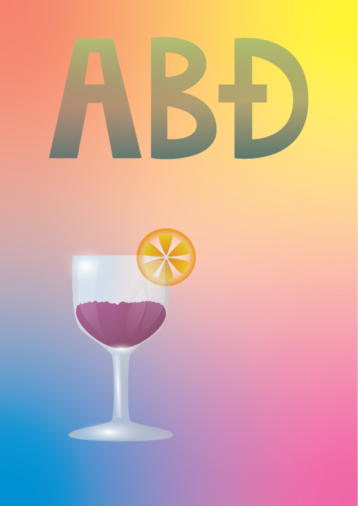
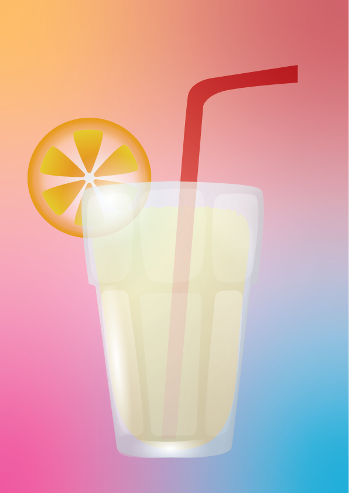
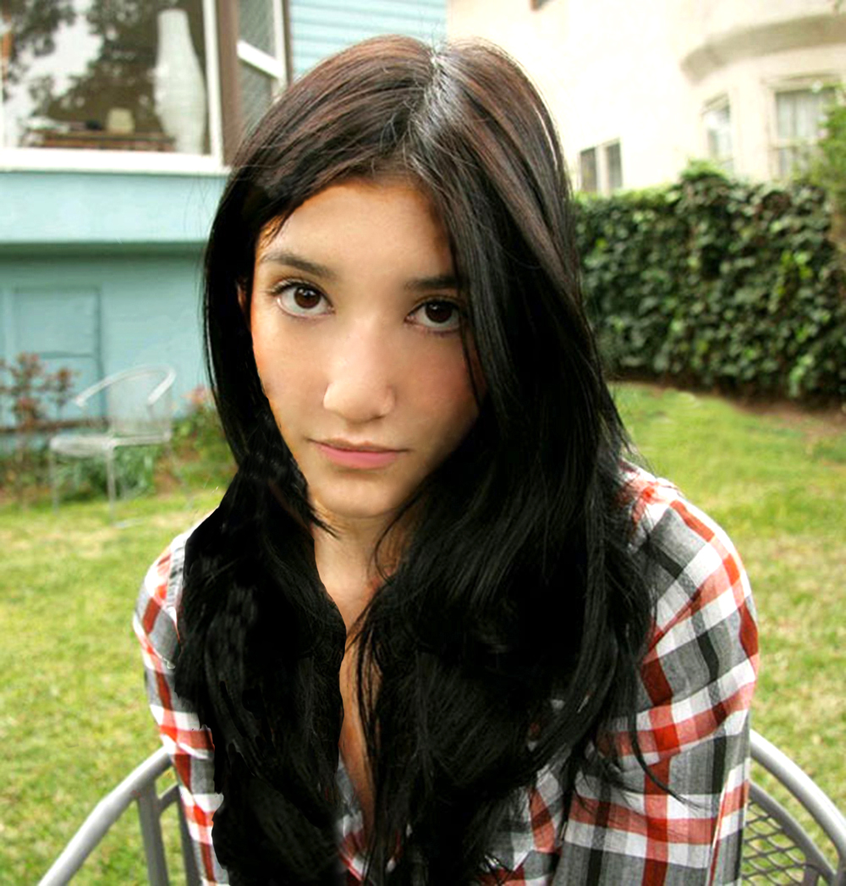
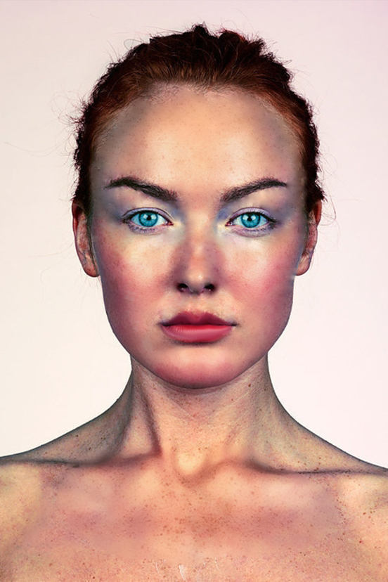
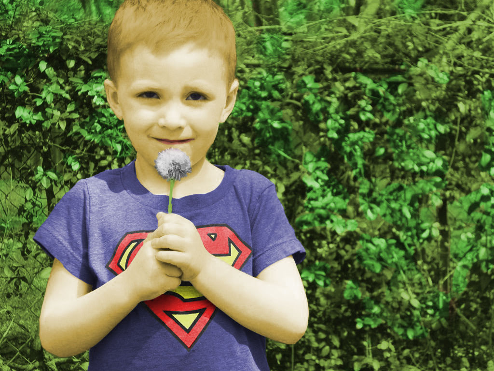
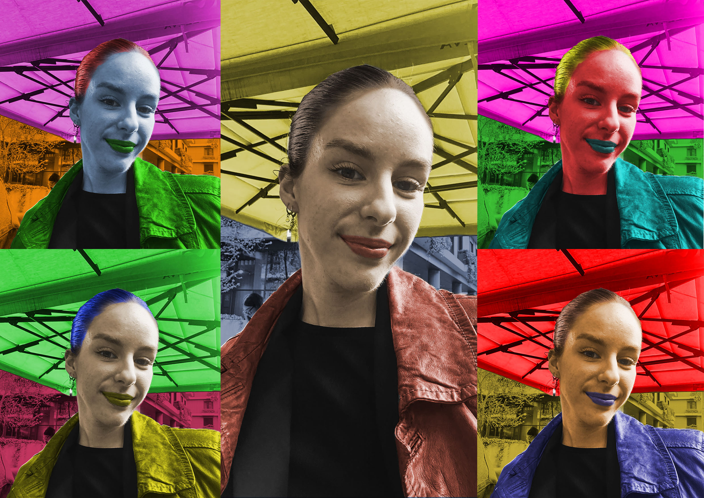
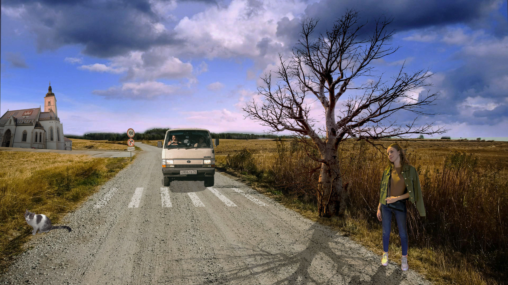

U prvoj vježbi smo naučili kako napraviti vlastiti font u programima FontForge-u i Fontographer-u. Ja sam se koristila programom FontForge i ovo je dizajn mog fonta:

U 2. vježbi sam kreirala proizvoljan broj vlastitih krivulja čije su točke poravnate prema mreži koordinatnog sustava, definirala sam im boju i debljinu obruba te između njih napravila interpolaciju (Blend). Koristeći vlastiti font s prošle vježbe preko krivulja ispisala sam svoje inicijale i napravila masku.
U 3. vježbi sam naučila koristiti se Pen toolom i tehnikama rotacije, scale, transparencije, multipliciranje oblika te sve to primjenila u svoj rad.
U 4. vježbi se obrađuje tema izrade složenih objekata koji se sastoje od više staza metodama spajanja (Unite/Compound path) ili oduzimanja oblika (Difference/Subtract).
 U 5. vježbi koristili smo tehnike digitalnog retuširanja fotografija za postizanje realističnog efekta, selekcije (Lasso Tool) i uklanjanje nedostataka na slici: zamućivanjem (Dust&Scratches, Median), kloniranjem (Clone Stamp, Heal...) i kopiranjem selekcije u layere te lokalne i globalne korekcije boja (Burn/Dodge brush, Levels, Brightness/Contrast)
 Ovu vježbu radimo u Photoshopu i prolazimo kroz tehnike neinvazivnog koloriranja slike koje se može primijeniti na crno-bijele slike ili slike u boji kojima želimo promijeniti nijansu određenih područja.
 Glavni cilj fotomontaže je kombiniranje više fotografija izrezivanjem dijelova različitih slika i spajanjem u jednu cjelinu. U ovoj vježbi sam se naučila koristiti različitim tehnikama selektiranja jednostavnih i složenih oblika. Vježba se bavi izradom i uklapanjem sjena objekata koje sam uvezla izrezivanjem i korekcijom boja kako bi se pojačala dojam realističnosti.
Vježba 8 se bavi osnovama obrade video materijala i uvođenjem multimedije u video projekt. Rezultat vježbe je kinemagraf čija je karakteristika spajanje statične i pokretne slike.


U 9. vježbi sam rezala video isječke iz više izvora te koristila video efekte da ih spojim. Također sam dodala zvuk i koristila pomične i statične tekstove u videu.